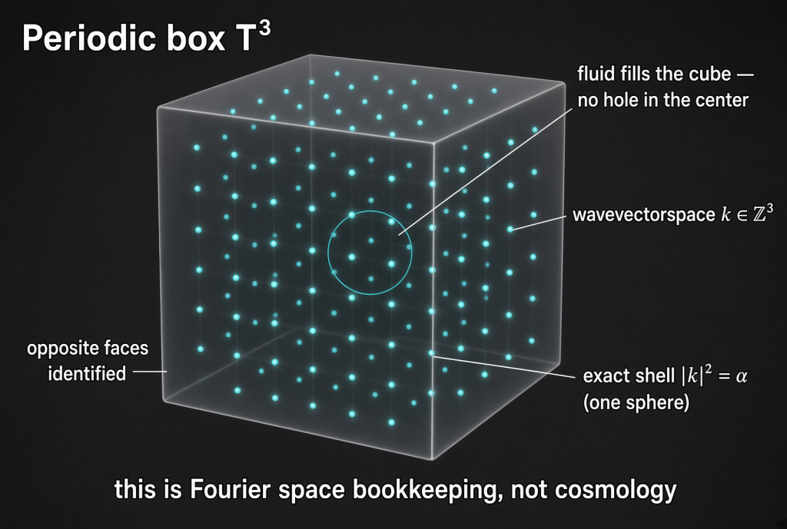
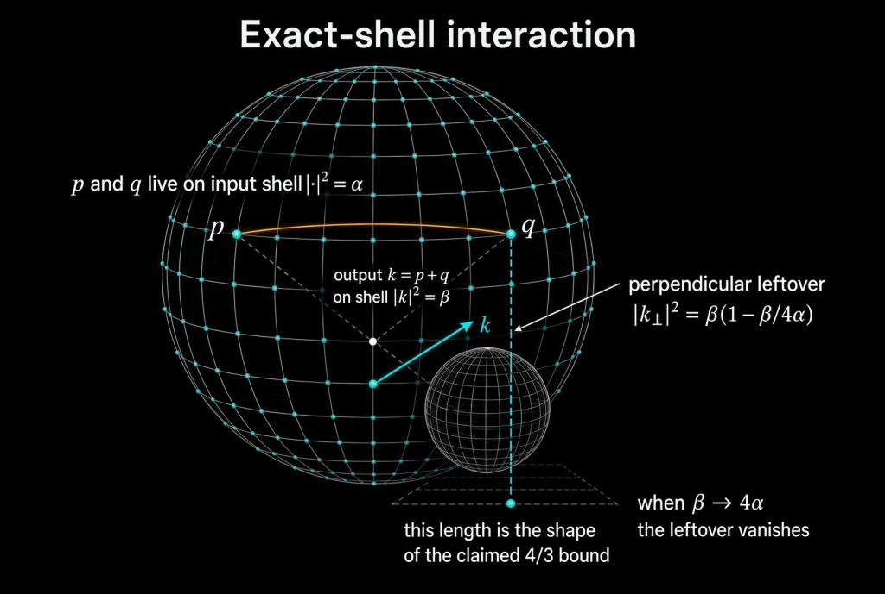

Fourier space bookkeeping, not cosmology Pictures that already teach. No new theorem.
Draft on the desk.
These drawings already earn their captions. This card does not close unaugmented leftover.
DA-VC-01 remains FAIL.
Substack: jonathansimonscrna.substack.com. Paywall off.
python3 scripts/cg_desk.py show teaching-pictures

Periodic box T³. Opposite faces identified. Fluid fills the cube — no hole in the center. Wavevectors k ∈ ℤ³. One circled sphere is an exact shell. Fourier space bookkeeping, not cosmology.
A periodic box is a cube whose opposite faces are the same face. Walk off the right wall, you come in from the left. The cyan dots are integer wavevectors. The pretty circle is not a hole in the room. It is one shell in wavevector space.
People sometimes look at a cube of dots and hear “universe.” The caption on the drawing already refuses that. Correspondence is not physical equivalence.

Exact-shell interaction. p and q on the input shell. Output k = p + q on |k|² = β. The leftover length is the shape of a claimed 4/3 bound — a shape, not a close.
When the output shell gets as large as this setup allows, that leftover shrinks to nothing. That geometry is why people draw this diagram. It is not a certificate that unaugmented Navier–Stokes regularity is closed.
Paste-ready · jonathansimonscrna.substack.com
Title: The periodic box and one shell
Dek: Two teaching pictures. Fourier bookkeeping, not cosmology. A claimed leftover length is not a close.
Upload periodic-box-t3.jpg then exact-shell-interaction.jpg with the alt text from rundown.json.
Body: cube is not a hole in the universe; shell interaction leftover |k⊥|² = β(1 − β/4α); unaugmented OPEN; DA-VC-01 FAIL.
VAL after the body.
Hook: Two pictures that actually teach. A cube of dots is not a hole in the universe. Claimed ≠ closed. Unaugmented leftover stays OPEN.
Ask in this thread: What did you first see in the cube — a room with a hole, or a lattice of waves?